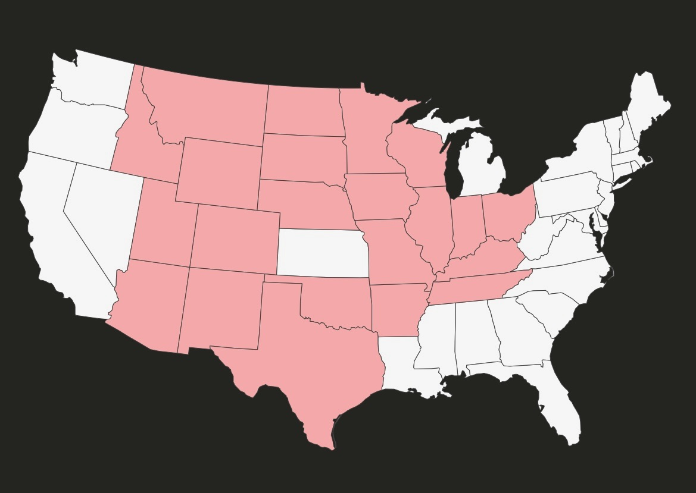
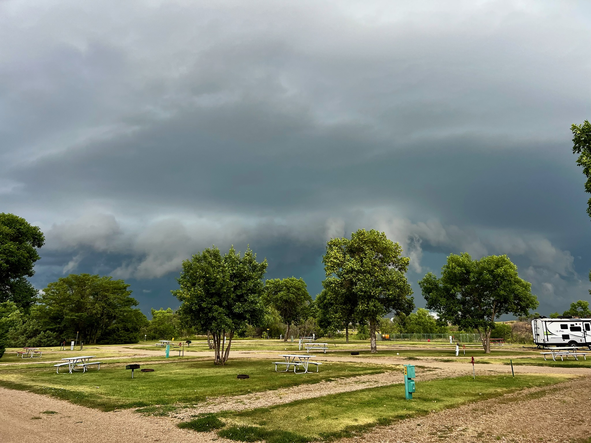
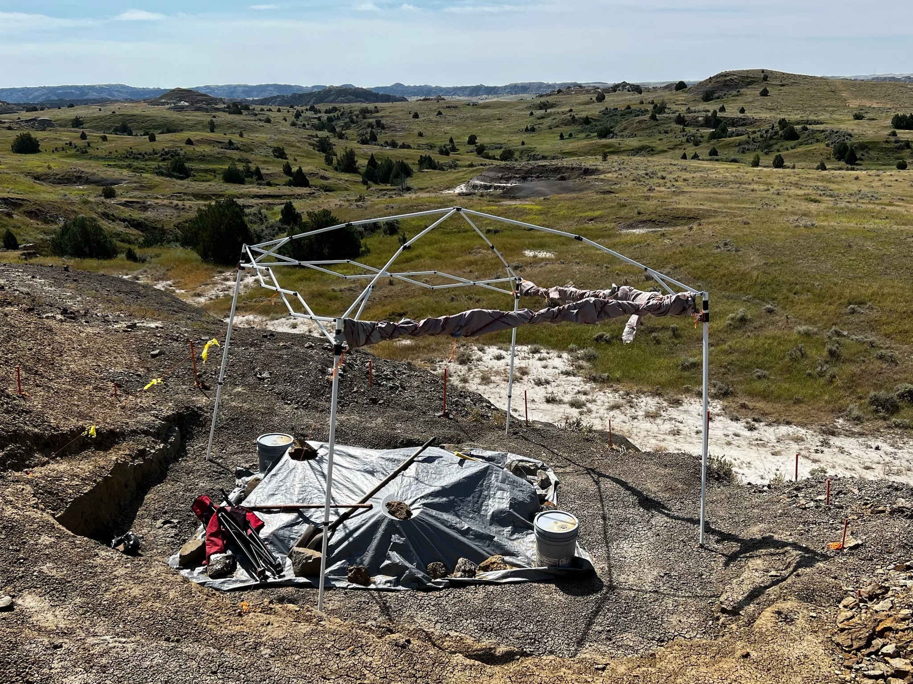

Practice makes perfect, NOT!
This trip felt different from the get-go. Sleeping in a car felt - adventuresome? Dangerous? Uncomfortable? Like a really bad idea? We didn’t know, so we practiced. Borrowing heavily from creators before us, we modified the rear of the van to accommodate a sleeping area that is queen-width at the shoulders and full-width at the legs. We borrowed a cartop carrier, made window screens, and upgraded our cooler. Our plan was to camp at campgrounds - something that we had never done before! We made several easy practice camps to study gear, food prep, sleeping conditions, and safety. Finally, it was time to roll out. We didn’t have everything planned, but we were set to spend more than a month on the road.
The first night exposed how much we still had to learn. We had booked an off-grid Hipcamp near Paducah in punishing heat. Without air conditioning, sleeping in the van was impossible. A call to the host and ninety dollars in cash moved us into a converted barn apartment—still with a walk outside to a shared porta-potty.
The second night was worse. A briefly-open van door admitted hundreds of mosquitoes. David collected a dozen bites. Cassie got hundreds. “Mosquitogeddon” nearly sent us home, but Cassie insisted that the trip continue. Maybe we were built for this.

New Mexico became an instant favorite
Cooler air and higher elevation changed everything. In New Mexico, we settled into a cadence with food, luggage, campgrounds, and the budget. We explored Santa Fe and Meow Wolf, learned to order our chile “Christmas style” and began using YouTube and Atlas Obscura with greater intent. We were no longer only visiting places; we were finding experiences.
Bisti Badlands was a turning point. Seven miles of washboard to get to the visitors’ parking lot is a very long ride in a minivan. The Wilderness is so expansive, that it can be dangerous. We used a telephone pole as a marker - stay where you can see it. Even with this limited range, we were able to explore some of the wildest geoformations that we have even found. We also spotted three or four rigs encamped near the visitors’ lot. We had spent more than two hours driving the 14 miles of washboards in and out. These lucky campers were there for days, needs met. We were already dreaming.
Shiprock, Four Corners, and the surrounding tribal lands made us aware of culturally meaningful boundaries that a road traveler can cross without even noticing. Buying fry bread from roadside vendors offered a small, personal experience beyond looking at a monument. By Four Corners, the early failures no longer defined the expedition. We were healthy, safe, eating well, laughing, and confident that our systems were working.

Meandering through big parks became our normal
At Mesa Verde, a campground owner refused our reservation because he saw people sleeping in a car. David asked him to look at the remodeled minivan as a tiny RV. The owner laughed and let us stay—without ever inspecting it. We still experience a full spectrum of responses when strangers meet us on the road.
A ranger-led tour of Cliff Palace was challenging, with ladders and climbing. The unusual intimacy of entering the ruins, moving among them, and imagining the community that occupied the landscape made the park feel radically different from a museum. Black Canyon of the Gunnison was a hot half-day of overlooks on the South Rim Drive.
Taylor Park, Colorado was a larger test. We arrived at camp near 8,000ft altitude dehydrated and (maybe) had a bourbon with friends. David barely slept and eventually borrowed oxygen. The next day we drank a lot more water, ate better, had no alcohol, and a much earlier bedtime. The lesson was effective.
The Tetons and much of Yellowstone became deliberate recovery days. Visiting these iconic parks for the first time is really amazing. We live in an online era where the main attractions are heavily photographed - you can come to feel that you know them when you’ve never actually been. Going changes everything. That said, we agree that the Grand Prismatic Spring looked exactly as impossible as the photographs—from the boardwalk and the overlook, in every direction it looks like it cannot be.
Glacier became one of our favorite parks. We drove Going-to-the-Sun Road three times in three days, walked toward Hidden Lake Overlook, and took an exposed Highline Trail hike. More importantly, we saw our first glaciers at a distance. Dreams of Canada and Alaska began to take root. Not yet though, we still had a lot more to do with Ivan!

Headed home, with a double-back surprise
In Montana we met Steve Bodi at a gas station. Steve was grabbing a bag of ice while we were getting our morning coffee. Steve is a serious hobby paleontologist who invited us to help at a dinosaur dig right happening right down the road. We initially said no; we had reservation several hours away, and we were meeting friends. By the time we arrived in Sturgis, we realized that we had made the wrong call. Steve was gracious and welcomed us to double-back. But only if we could meet his timing. We were going to have to add a week to the trip. No warning, no problem. We were made for this.
Our added days were a success. Theodore Roosevelt National Park delivered one of our best wildlife days. Light rain cooled the air. A bison crossed close to the car, and we saw pronghorn, elk, a coyote, and an unidentified wild cat. At Devils Tower, the KOA put our campsite nearly beneath the monument, turning the evening into a photo playground.
Back at the dig, Steve was excavating a Triceratop he had located the previous summer. We brushed away dust, helped with cleanup, and worked with a giant bucket of plaster. Beneath a tarp in a shallow pit, the animal’s frill was unmistakable—the kind of shape we expected behind museum glass, not emerging from the earth under our hands.
Afterward, we chose a playful route home: the Corn Palace, every “Sac” sign we could photograph in Sac City, Iowa, and the world’s largest popcorn ball. The van reached Cincinnati with rock damage in the windshield that we still have not replaced years later—a scar and souvenir.
We returned knowing the experiment had succeeded. The bed worked. We could eat from a cooler, cook when needed, hide from weather, manage campgrounds, adapt to altitude, and press through problems. We had upgrade ideas and no doubt the minivan would be deployed again.